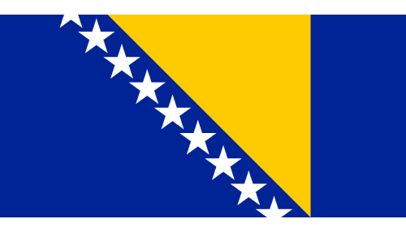

Viernes 12 de Junio
2:00 PM
CAN
VS
BHG

Viernes 12 de Junio
8:00 PM
KOR
VS
CZE
Tu navegador no soporta el elemento de audio.
🔊 La Música de Fondo Requiere que Inicies la Reproducción.
Haz Clic para Iniciar